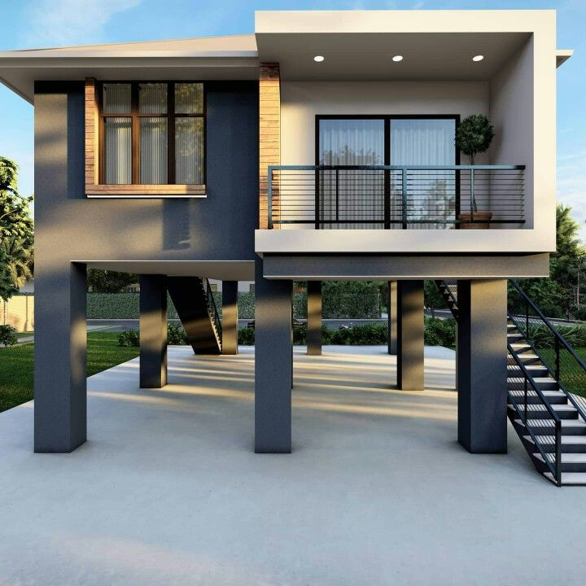
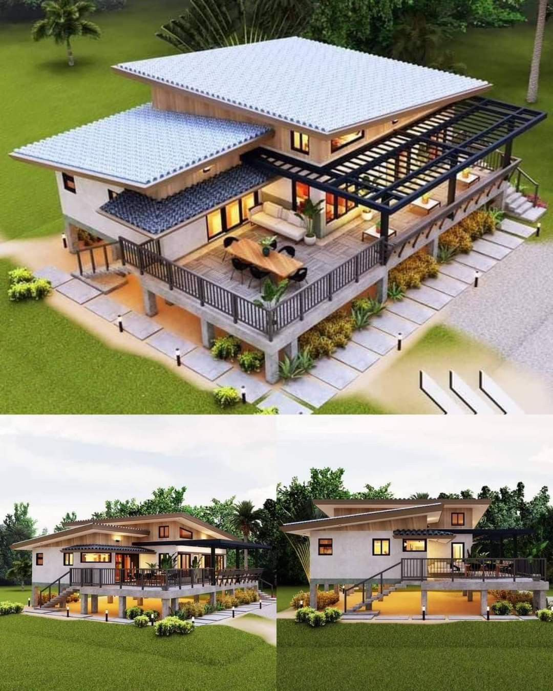
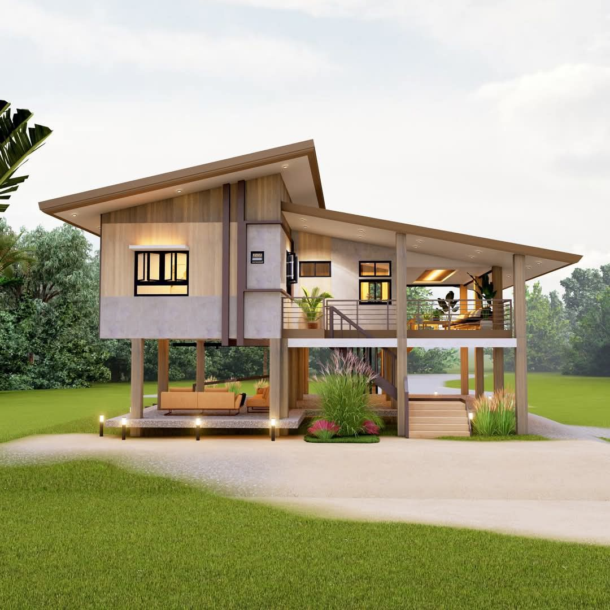
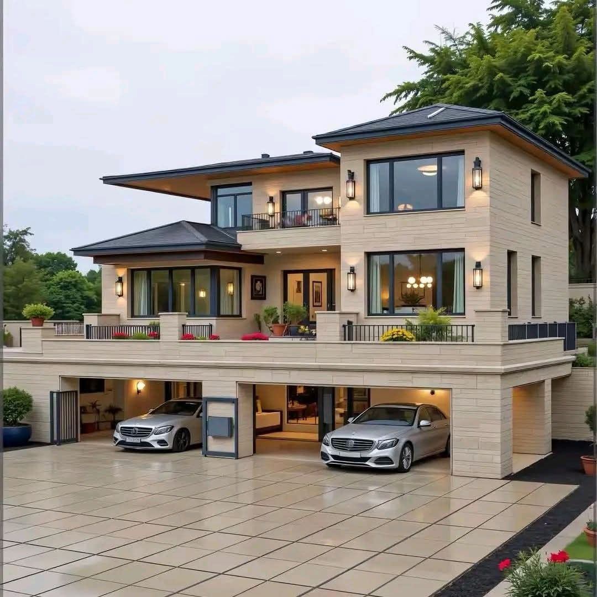

Tại sao nên xây dựng mẫu nhà chống ngập lụt trong giai đoạn hiện nay?
Trong bối cảnh khí hậu ngày càng khắc nghiệt, tình trạng ngập lụt tại Việt Nam diễn ra thường xuyên hơn.
Chính vì vậy, việc cải tạo và xây dựng nhà theo hướng chống ngập lụt là một giải pháp cần thiết và hiệu
quả nó sẽ giúp bạn:
-
Bảo vệ an toàn và tài sản: Ngập lụt gây hư hại nhà cửa, đồ đạc, thậm chí đe dọa tính mạng.Thiết kế nhà
chống lụt hạn chế tối đa thiệt hại, đảm bảo sinh hoạt không bị gián đoạn.
- Thích ứng bền vững cho tương lai: Đây không chỉ là giải pháp tạm thời, mà là hướng đi dài hạn để sống
an toàn trong bối cảnh khí hậu khắc nghiệt.Đầu tư một lần nhưng mang lại lợi ích lâu dài.
- Tính thẩm mỹ và công năng ngày càng cao: Không chỉ đơn thuần là nhà sàn truyền thống, hiện nay đã có
nhiều mẫu thiết kế hiện đại, đẹp mắt, phù hợp với nhu cầu và ngân sách của từng gia đình.
- Ổn định sinh hoạt: Thay vì phải sơ tán khẩn cấp, người dân có thể ở lại và sinh hoạt tương đối bình
thường trên tầng cao hoặc kết cấu an toàn của ngôi nhà trong suốt thời gian ngập.
Tham khảo 5 mẫu nhà chống ngập lụt đảm bảo an toàn thẩm mỹ
Nếu bạn đang muốn tìm 1 mẫu nhà chống ngập lụt có thể tham khảo các khảo các
phong cách thiết kế sau:
Mẫu nhà sàn bê tông hiện đại
Ngôi nhà được xây dựng trên một hệ thống cột trụ vững chắc, nâng toàn bộ
không gian sinh hoạt lên cao so
với mặt đất. Đây là giải pháp kiến trúc ưu tiên cho các khu vực thường xuyên bị lũ lụt, triều cường hoặc
có nền đất yếu. Phong cách hiện đại, tối giản, thể hiện qua các khối hình học vuông vắn, đường nét thẳng
và sự hạn chế chi tiết trang trí cầu kỳ.

Hệ thống cột trụ vững chắc, nâng toàn bộ không gian sinh hoạt lên cao so với mặt đất giải pháp cho
các ngôi nhà ở vùng ngập úng
Thiết kế này chủ yếu sử dụng tông màu xám trầm ấm, kết hợp với các mảng trắng
sáng tại mặt tiền ban công
và điểm nhấn màu gạch ở khu vực cửa sổ giúp ngôi nhà thêm phần nổi bật không bị nhàm chán. Đặc biệt hệ cửa
kính không chỉ giúp ngôi nhà đón ánh sáng mà còn chịu lực tốt.
Điểm nổi bật nhất của ngôi nhà phải kể đến hệ thống cột trụ bê tông cốt thép
lớn hình hộp chữ nhật. Các
cột này được thiết kế để chịu được tải trọng của ngôi nhà và áp lực dòng chảy của nước lũ. Toàn bộ không
gian dưới sàn nhà được để trống, tạo thành một khu vực bán ngoài trời rộng rãi. Gia chủ cũng có thể sử
dụng khu vực này để đậu xe, hoặc không gian sinh hoạt chung.
Mẫu nhà mang phong cách hiện đại nhiệt đới
Đây là mẫu nhà thích hợp với vùng nông thôn hoặc ngoại ô thành phố, phong
cách này được thiết kế hài hòa giữ kiến trúc truyền thống và phong cách hiện đại. Phong cách này đặc biệt
phù hợp với khí hậu nhiệt đới và các khu vực có nguy cơ ngập lụt nhẹ hoặc cần độ thông thoáng cao.
Mái nhà được thiết kế dốc, xếp tầngvới độ vươn lớn, không chỉ tạo điểm nhấn
thị giác mà còn giúp thoát nước mưa cực kỳ hiệu quả và che chắn tốt cho khu vực ban công và tường nhà.
Toàn bộ không gian sinh hoạt chính được nâng lên khỏi mặt đất bằng hệ thống chân cột ngắn (có thể là bê
tông hoặc gỗ ốp bê tông), tạo ra sự thông thoáng tối đa và là giải pháp chống ẩm mốc, côn trùng, và ngập
lụt nhẹ.

Mẫu nhà chống ngập lụt kết hợp giữ hiện đại và kiến trúc truyền thống
Khối nhà chính có hình dạng tương đối đơn giản, sơn màu trắng hoặc kem, tạo
cảm giác nhẹ nhàng, sạch sẽ. Ngôi nhà được sử dụng nhiều cửa sổ và cửa ra vào bằng kính lớn, tối đa hóa
ánh sáng tự nhiên và tầm nhìn ra cảnh quan xung quanh. Điểm đặc biệt là cầu thang ngoài trời được bố trí ở
mặt trước và bên hông giúp việc di chuyển lên xuống sàn nhà trở nên thuận tiện.
Mẫu nhà mang phong cách hiện đại nhiệt đới
Ngôi nhà ngày được thiết kế theo phong cách nhà sàn. Toàn bộ không gian sinh
hoạt chính được nâng cao trên hệ thống cột trụ (có vẻ là bê tông hoặc gỗ/thép), để trống tầng trệt. Mô
hình này rất phù hợp cho các vùng dễ bị ngập lụt, ẩm thấp, hoặc cần sự thông thoáng cao.
Mái được thiết kế dốc nghiêng về một phía, tạo hình khối hiện đại, đồng thời
giúp thoát nước mưa cực kỳ nhanh chóng và giảm nhiệt cho không gian bên dưới. Sự kết hợp hài hòa giữa các
mảng tường ốp gỗ (hoặc vật liệu giả gỗ) ấm áp ở phần trên và tường bê tông trần (hoặc sơn màu xám nhạt) ở
phần dưới, mang lại cảm giác mộc mạc nhưng vững chắc.

Mẫu nhà mang phong cách hiện đại nhiệt đới
Tầng trệt được để trống hoàn toàn, tạo thành một khu vực bán ngoài trời rộng
rãi, mát mẻ. Khu vực này đang được bố trí làm khu vực thư giãn hoặc tiếp khách ngoài trời với sofa và bàn
nhỏ. Trong mùa mưa lũ, nó trở thành không gian an toàn để đậu xe hoặc cất giữ tạm thời các vật dụng lớn
không sợ nước.
Mẫu nhà tân cổ điển với công năng chống ngập lụt
Ngôi nhà được xây dựng bằng cách ghép các khối hình học vững chắc, tạo cảm
giác bề thế và đối xứng nhẹ. Mẫu nhà này với phong cách thiết kế pha trộn giữa sự tinh tế, bề thế của kiến
trúc tân cổ điển (thể hiện qua vật liệu ốp tường và lan can đặc) và sự hiện đại (thể hiện qua hệ thống cửa
kính lớn và mái bằng/mái dốc nhẹ).

Ngôi nhà được xây dựng bằng cách ghép các khối hình học vững chắc, tạo cảm giác bề thế và đối xứng
nhẹ
Điểm đặc biệt là khu vực gara ô tô được thiết kế nằm gọn trong khối móng nhà
cao, không hoàn toàn là tầng hầm chìm xuống đất mà là một tầng trệt kiên cố và nâng cao. Khu vực này được
nâng cao hơn so với mặt sân, kết hợp với sân dốc nhẹ ra ngoài, giúp chống ngập lụt hiệu quả cho khu vực
đậu xe, bảo vệ tài sản có giá trị cao.
Nhà biệt thự cao cấp
Mẫu nhà này là sự kết hợp giữa kiến trúc Hiện đại (cửa kính lớn, không gian
mở) và yếu tố Đông Á/Truyền thống (thể hiện qua kiểu mái dốc và ngói lợp). Mái nhà dốc, lợp ngói màu xám
đậm hoặc đen, có các đường diềm mái đặc trưng, gợi nhớ đến kiến trúc nhà Á Đông, vừa đẹp mắt vừa giúp
thoát nước mưa hiệu quả.
 Mẫu nhà này là sự kết hợp giữa kiến trúc Hiện đại và yếu tố Đông Á/Truyền thống
Mẫu nhà này là sự kết hợp giữa kiến trúc Hiện đại và yếu tố Đông Á/Truyền thống
Toàn bộ tầng sinh hoạt chính và sân thượng được xây dựng trên một bệ đỡ/khối
móng kiên cố (tầng gara). Điều này nâng sàn nhà lên một độ cao đáng kể so với mặt sân phía dưới. Phần bệ
đỡ rất vững chắc (ốp đá tự nhiên và bê tông), đóng vai trò như một bức tường chắn lũ cho ngôi nhà phía
trên.
Lưu ý khi xây nhà chống ngập lụt
Xây dựng nhà chống ngập lụt là một quyết định thông minh và cần thiết ở Việt
Nam. Tuy nhiên, để công trình thực sự hiệu quả và an toàn, bạn cần lưu ý kỹ các yếu tố sau trong quá
trình thiết kế và thi công:
- Tham khảo mực nước lũ lịch sử: Trước khi xây dựng, cần nghiên cứu kỹ về mực nước lũ cao nhất đã từng
xảy ra trong khu vực để tính toán chính xác độ cao cần nâng nền hoặc xây gác tránh lũ.
- Tính toán tốc độ dòng chảy: Ở các khu vực có lũ quét hoặc dòng chảy xiết, cần tính toán để kết cấu
móng và cột có khả năng chịu được lực ngang của nước.
- Đầu tư vào kết cấu: Cần gia cố móng và tường bằng vật liệu chịu lực tốt (bê tông, cốt thép) để ngôi
nhà có thể chịu được áp lực dòng chảy và gió bão.
- Vị trí thiết bị điện: Lắp đặt các ổ cắm điện, cầu dao, hệ thống điện ở vị trí cao, trên mực nước lũ
an toàn để tránh chập cháy, nguy hiểm.
- Bố trí Công năng Chống ngập: Ngôi nhà cần được thiết kế đảm bảo an toàn trong thời gian ngập lụt.
Gác tránh lũ phải kiên cố, đủ diện tích cho người và tài sản; đồng thời bố trí lối thoát hiểm lên mái
hoặc ban công cao. Nếu có khu chăn nuôi tầng trệt, cần sàn dốc và thoát nước nhanh để dễ vệ sinh sau
lũ.
- Cửa chống ngập: Lắp đặt tấm chắn nước hoặc cửa chống ngập chuyên dụng cho cửa ra vào và cổng tầng
hầm (ở đô thị) để ngăn nước tràn cục bộ.
Nếu khu vực bạn sinh sống thường xuyên bị ngập lụt, việc đầu tư vào một ngôi
nhà có giải pháp chống ngập là một sự đầu tư bền vững và thông minh cho sự an toàn của gia đình bạn.
Những mẫu nhà này đại diện cho xu hướng kiến trúc chú trọng vào tính bền vững, an toàn (chống lũ/ngập)
và tính thẩm mỹ hiện đại trong môi trường xây dựng đầy thách thức của Việt Nam.
Bình luận
Trần Minh Tuấn
Bài viết rất hay và chi tiết! Tôi đang có kế hoạch xây nhà trọn gói ở Hà Nội và thông tin này rất hữu ích. Trường Sinh có vẻ là đơn vị uy tín với kinh nghiệm lâu năm. Cảm ơn tác giả đã chia sẻ!
Lê Thị Hương
Tôi đã từng sử dụng dịch vụ xây nhà trọn gói của Trường Sinh và rất hài lòng. Đội ngũ kỹ thuật chuyên nghiệp, tiến độ đúng hẹn và chất lượng công trình tốt. Khuyến nghị mọi người nên tham khảo!
Phạm Đức Anh
Bảng giá trong bài viết rất chi tiết và minh bạch. Tôi thích cách Trường Sinh chia nhỏ từng hạng mục chi phí, giúp khách hàng dễ dàng lên kế hoạch tài chính. Sẽ liên hệ để được tư vấn cụ thể hơn.
Hoàng Thị Mai
Quy trình 7 bước rất rõ ràng và chuyên nghiệp. Tôi đặc biệt ấn tượng với phần hỗ trợ xin phép xây dựng, vì đây là vấn đề nhiều người gặp khó khăn. Cảm ơn tác giả đã chia sẻ kinh nghiệm quý báu!